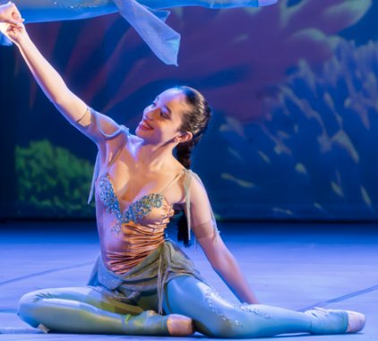

Seja bem vindo/a ao Ballet e contexto

Olá! Sejam bem-vindos ao meu blog de Ballet! Meu nome é Mariana e eu gosto de ballet desde que me conheço por gente. Não sou uma bailarina profissional e atualmente faço faculdade de ciência da computação na SPTech, mas sou curiosa e uma entusiasta do ballet. Então, quando minha professora de PI solicitou para criarmos um site que mostrasse um pouco de nós, a primeira coisa que me veio em mente foi o Ballet. Comecei a fazer aulas com três anos e, por mais que o meu objetivo no ballet tenha mudado ao longo do tempo, é algo que eu não me vejo sem. Mesmo que eu não esteja dançando no momento, paro sempre que vejo um vídeo a respeito, seja ele uma análise de performance profissional em uma língua que eu não entendo ou de estudantes treinando e recebendo correções em aula.
Então, o que teremos aqui?
Aqui será um pequeno acervo de conhecimento, teremos histórias do ballet, ballets de repertório e alguns testes para você se desafiar. Pretendo aumentar nosso acervo gradualmente para incluir explicações sobre pantomimas, história de cada método de ballet, de bailarinas/os importantes, dicas para melhorar no ballet, recomendações de pessoas para seguir, etc.

História do ballet
texto texto texto texto texto texto texto texto texto texto texto texto texto texto texto texto texto texto texto texto texto texto texto texto texto texto texto texto texto texto texto texto texto texto texto texto texto texto texto texto
Lago dos Cisnes
A trama gira em torno da princesa Odette, que é transformada em cisne por um feitiço do mago Von Rothbart. Durante o dia, Odette vive como um cisne, mas à noite, ela recupera sua forma humana. Para quebrar o feitiço, ela precisa que um príncipe, Siegfried, declare seu amor e fidelidade a ela. O enredo se complica quando Siegfried é enganado por Odile, o cisne negro e filha de Von Rothbart, que se disfarça como Odette.
%20ROH%2C%202019.%20Photographed%20by%20Bill%20Cooper.%20(3).jpg)
Coppélia
Coppélia é um dos balés cômicos mais famosos e apresentados no mundo. Ele estreou em Paris, em 1870, e conta a história do Dr. Coppélius, um criador de brinquedos, e da jovem Swanilda, que descobre que Coppélia, a misteriosa "donzela" que lia na sacada, é na verdade uma boneca mecânica.